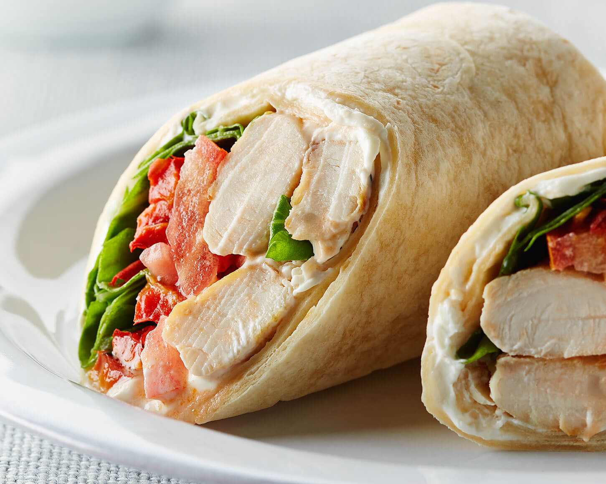

Chicken Wrap

Prep Time: 15 mins
Yield: 4 servings
Ingredients:
- 2 boneless chicken breasts, sliced
- 1 teaspoon salt
- 1/2 teaspoon black pepper
- 1 teaspoon garlic powder
- 1 teaspoon paprika
- 1 tablespoon olive oil
- 4 large tortillas
- 1/2 cup shredded lettuce
- 1/2 cup diced tomatoes
- 1/4 cup mayonnaise
- 1 tablespoon hot sauce (optional)
Steps:
- Season the sliced chicken with salt, pepper, garlic powder, and paprika.
- Heat olive oil in a pan and cook the chicken until golden brown and fully cooked.
- Warm the tortillas in a dry pan or microwave.
- Spread mayonnaise and hot sauce on each tortilla.
- Layer lettuce, tomatoes, and cooked chicken on top.
- Fold the sides of the tortilla and roll it tightly.
- Slice in half and serve warm.